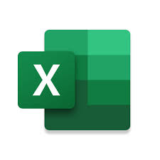

| cehernandez | Procesadores | Presentaciones | Hojas de Calculo | Componentes de pc |
Una hoja de cálculo es una aplicación informática para el cálculo , organización, análisis y almacenamiento de datos en forma tabular.Las hojas de cálculo se desarrollaron como análogos computarizados de las hojas de trabajo contables en papel .El programa opera con los datos ingresados en las celdas de una tabla. Cada celda puede contener datos numéricos o de texto, o los resultados de fórmulas que calculan y muestran automáticamente un valor basado en el contenido de otras celdas. El término hoja de cálculo también puede referirse a uno de esos documentos electrónicos.
Los usuarios de hojas de cálculo pueden ajustar cualquier valor almacenado y observar los efectos en los valores calculados. Esto hace que la hoja de cálculo sea útil para el análisis hipotético, ya que muchos casos se pueden investigar rápidamente sin volver a calcular manualmente. El software moderno de hojas de cálculo puede tener múltiples hojas que interactúan y puede mostrar datos como texto y números o en forma gráfica.
Los usuarios de hojas de cálculo pueden ajustar cualquier valor almacenado y observar los efectos en los valores calculados. Esto hace que la hoja de cálculo sea útil para el análisis hipotético, ya que muchos casos se pueden investigar rápidamente sin volver a calcular manualmente. El software moderno de hojas de cálculo puede tener múltiples hojas que interactúan y puede mostrar datos como texto y números o en forma gráfica.
 |
 |
Google docs Excel |
Excel |
Numbers |
| Hojas de cálculo de Google es un programa de hoja de cálculo que se incluye como parte de la suite gratuita de editores de Google Docs basada en la web que ofrece Google . Google Sheets está disponible como aplicación web , aplicación móvil para: Android , iOS , Microsoft Windows , BlackBerry OS y como aplicación de escritorio en ChromeOS de Google . La aplicación es compatible con los formatos de archivo de Microsoft Excel . | Microsoft Excel es una hoja de cálculo desarrollada por Microsoft para Windows , macOS , Android , iOS y iPadOS . Cuenta con capacidades de cálculo o computación , herramientas gráficas, tablas dinámicas y un lenguaje de programación de macros llamado Visual Basic para Aplicaciones (VBA). Excel forma parte del paquete de software Microsoft 365 . | Numbers es una aplicación de hojas de cálculo que está diseñada para ayudar a los equipos a crear tablas, gráficos, barras, columnas, diagramas e ilustraciones y visualizar datos a través de navegadores web o de dispositivos como Mac, iPad e iPhone. |